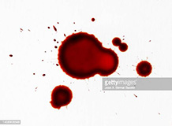

The subject has shown an incredible aptitude for killing. Luckily her atunement hasn't negatively
affected this. I had my suspicions initially due to sand not being a very dangerout object on paper.
However, her creativity proved that to be no issue. Her biggest weakness though, is her sacrifice.
Ones consitution is a risky sacrifice without a very mobile atunement, so I fear for her fragility.
This subject fights with blinding precision, using her sand to blind opponents, and cutting them down
from where they least expect it, ending most fights in an instant. She harbors no qualms with
violence and follows orders to a tee. However, she has been growing an intrest in the outside world.
I do not believe she is ready for the outside world, and has much more conditioning to go through
before she should be allowed.
The subject is the only rival to Sicco's ability to kill. Her atunement is part of the reason. 
Ironically, her cold-bloodedness allows her atunement to her own blood to be highly dangerous.
Her sacrifice was her metabolism. Like a vampire, she can only nourish herself from the blood of other
creatures. This subjects combat style takes advantage of her control of her blood, hardening it to
create spines or spikes, as well as shielding herself from attacks. Her loyalty is even greater than
Sicco's, and unlike Sicco has no intrest in anything beside what the Empire plans for her.
She actually seems to revel in violence, as she only seems to smile in the arena, never in the daycare.
Both subjects are going to be very useful to the Empire. Sicco may be more tricky to manage,
But I'm sure the fact Sanguis rivals her combat prowess, will be enough to keep her in check.
For both of them, I'm glad we managed to aquire them at a young age. Training from childhood is essential to enforce proper loyalty to the Empire.